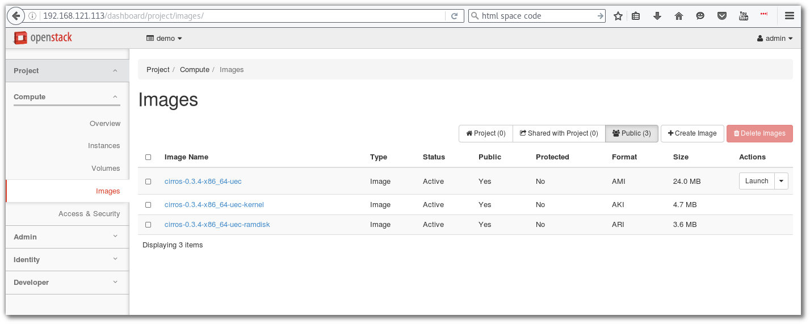

Openstack With DevStack¶
Devstack with Vagrant¶
file vagrant สำหรับการทดสอบ devstack
# -*- mode: ruby -*-
# vi: set ft=ruby :
Vagrant.configure("2") do |config|
config.vm.box = "fedora/24-cloud-base"
config.vm.define :devstack do |node|
node.vm.hostname = "devstack.example.com"
node.vm.provider :libvirt do |domain|
domain.uri = 'qemu+unix:///system'
domain.driver = 'kvm'
domain.memory = 8192
domain.cpus = 2
domain.nested = true
domain.volume_cache = 'none'
domain.storage :file, :size => '20G'
end
end
end
Download complete file Vagrantfile2:
Install Devstack¶
หลังจาก ที่เราได้ทำการ vagrant up server1 เรียบร้อยแล้ว vm นี้มีขนาด RAM 8 Gb เพื่อใช้การทดสอบ
openstack ทดสอบโดยการสร้าง Directory สำหรับการทดสอบ Devstack และ ให้ Download หรือ สร้าง
file Vagrant จากตัวอย่างด้านบน
mkdir ~/Devstack
cd ~/Devstack
wget https://thaiopen.github.io/sipacloudcourse/_downloads/Vagrantfile2
mv Vagrantfile2 Vagrantfile
## ssh to vagrant
vagrant ssh server1
## change to root
sudo su -
useradd -d /opt/stack stack
echo "stack ALL=(ALL) NOPASSWD: ALL" >> /etc/sudoers
exit
## on normal vagrant user
sudo dnf install git
git clone https://git.openstack.org/openstack-dev/devstack
cd devstack
## create local.conf
cat << LOCAL > local.conf
[[local|localrc]]
ADMIN_PASSWORD=password
DATABASE_PASSWORD=password
RABBIT_PASSWORD=password
SERVICE_PASSWORD=password
LOCAL
## run stack.sh
./stack.sh
ผลลัพท์ที่ได้:
=========================
DevStack Component Timing
=========================
Total runtime 3780
run_process 41
pip_install 535
restart_apache_server 8
wait_for_service 10
yum_install 181
git_timed 2075
=========================
This is your host IP address: 192.168.121.113
This is your host IPv6 address: ::1
Horizon is now available at http://192.168.121.113/dashboard
Keystone is serving at http://192.168.121.113/identity/
The default users are: admin and demo
The password: password
2016-07-19 10:32:41.679 | WARNING:
2016-07-19 10:32:41.679 | Using lib/neutron-legacy is deprecated, and it will be removed in the future
2016-07-19 10:32:41.679 | stack.sh completed in 3780 seconds.
เปิด browser ไปยัง http://192.168.121.113/dashboard

login ด้วย admin/password
Manage Devstack¶
เนื่องจาก devstack run service ต่างๆ ใน screen session ไม่มี service command สำหรับการ start stop ัดังนั้นจะต้องเข้าไปใน screen session มีขั้นตอนดังนี้:
screen -list
There is a screen on:
28843.stack (Detached)
1 Socket in /var/run/screen/S-vagrant.
จะพบว่ามี screen session ชื่อ stack run อยู่:
screen -x stack
หลังจาก run แล้ว จะเข้าสู่ session ของ screen ดังรูปด้านล่าง ซึ่งจะต้องใช้คำสั่งในการจัดการ โดยให้พิมพ์คำสั่ง
ขึ้นต้นด้วย Ctrl+b แล้วตามด้วยค่าต่างๆ

คำสั่งแสดง list ทั้งหมด:
Ctrl a " (กด ctrl a แล้วปล่อย จากนั้นตามด้วย ")

เลือก process:
*. เลื่อน cursor ไปยัง process ที่ต้องการ แล้วจึงกด ``enter``เพื่อเลือกไปดู process เช่น เลือนไปยัง
process 2 ซึ่งเป็น process ของ keystone ``enter`` เพื่อทำการ monitor ใหัสังเกตุดูบรรทัดล่างสุด
จะมี เครื่องหมาย ``*``
.. image:: _images/devstack05.png
*. สามารถกด ``Ctrl a N`` โดยที่ N หมายถึงหมายเลข ของ process จะทำให้เข้าไปยัง process นั้นทันที